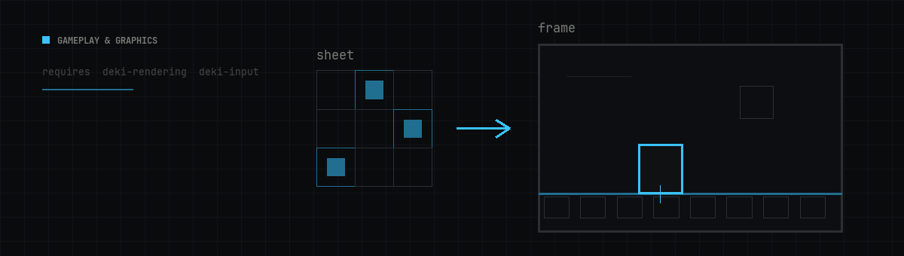
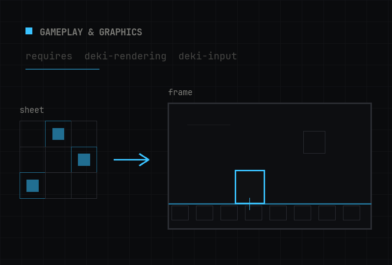

- Generated by
 1.18.0
1.18.0
|
deki-2d 0.16.0
Deki package reference
|


Sprites, text, animations, gradients, buttons, scrolling
Repository: github.com/dekiengine/deki-2d · Latest release: 0.16.0 · Needs engine 0.16.0+ · Requires: deki-rendering, deki-input
Install with DekiEditor --packages-add deki-2d <project>, or from the Package Manager. The engine's own components and C++ API are in the Deki docs.
Shown in the editor as 2D.
| Component | Category | Description |
|---|---|---|
| AnimationComponent | 2D | Plays a frame animation asset on the object's sprite. |
| ButtonComponent | 2D | Makes the object a button: tracks hover and press, and fires a click callback. |
| ButtonStyleComponent | 2D | Gives a button its look per state, by tinting or by swapping sprites. |
| ClipComponent | Core | Clips its children's rendering to a rectangle. |
| GradientComponent | 2D | Draws a procedural gradient: linear, radial or conical. |
| RollerComponent | 2D | Picker wheel: spins through a list of values with momentum and snaps to one. |
| ScrollComponent | 2D | Scrolls its children by dragging, with momentum. |
| ScrollElement | 2D | Declares one list item's size so its Scroll Component can lay the list out. |
| SortingGroupComponent | 2D | Makes its children sort together as one unit against the rest of the scene. |
| SpriteComponent | 2D | Draws a sprite, with tint, flip, and tiled or 9-slice modes. |
| TextComponent | 2D | Draws text with a bitmap font, alignment and word wrap. |
Features this package can be built without. One with no define is stripped by its component types instead.
| Feature | Define | Default |
|---|---|---|
| Sprites | DEKI_FEATURE_SPRITE | on |
| Text | DEKI_FEATURE_TEXT | on |
| Animation | DEKI_FEATURE_ANIMATION | on |
| Gradients | DEKI_FEATURE_GRADIENT | on |
| Buttons | DEKI_FEATURE_BUTTON | on |
| Scrolling | DEKI_FEATURE_SCROLL | on |
| Rollers | DEKI_FEATURE_ROLLER | on |
| Clipping | DEKI_FEATURE_CLIP | on |
| Sorting Groups | DEKI_FEATURE_SORTING_GROUP | on |
Plays a frame animation asset on the object's sprite.
Inspector name: Animation Component · Category: 2D · Type: Deki2D::AnimationComponent
| Property | Type | Default | Description |
|---|---|---|---|
| animation | AssetRef (FrameAnimationData) | "" | A frame animation asset, which lists the frames and how long each is held. |
| currentSequence | int32 | 0 | Which named sequence is playing, by index. Sequences are the separate animations inside one asset, such as idle and walk. |
| currentFrame | int32 | 0 | Frame within the current sequence. Set it to scrub; it is also useful to read while debugging. |
| isPlaying | bool | false | Whether the animation is advancing. Clearing this freezes it on the current frame rather than resetting it. |
| hasFinished | bool | false | Set when a non-looping sequence reaches its last frame. Read it to know when to move on. |
| playOnceOverride | bool | false | Play the current sequence once even if the asset marks it as looping. Cleared when the sequence changes. |
Makes the object a button: tracks hover and press, and fires a click callback.
Inspector name: Button Component · Category: 2D · Type: Deki2D::ButtonComponent
| Property | Type | Default | Constraints | Description |
|---|---|---|---|---|
| inputCollider | ObjectRef (InputCollider) | 0 | The hit area that makes this button clickable. Without one the button has no way to notice a press. | |
| state | enum | "Normal" | Normal, Hovered, Pressed, Disabled | Normal, hovered, pressed or disabled. Set by input; a style component watches it to decide what to draw. |
| isEnabled | bool | true | A disabled button ignores input and reports the disabled state, so it can be greyed out rather than hidden. |
Gives a button its look per state, by tinting or by swapping sprites.
Inspector name: Button Style Component · Category: 2D · Type: Deki2D::ButtonStyleComponent
| Property | Type | Default | Constraints | Description |
|---|---|---|---|---|
| button | ObjectRef (ButtonComponent) | 0 | The button whose state drives this styling. Usually the button on the same object. | |
| sprite | ObjectRef (SpriteComponent) | 0 | The sprite this styling changes. Usually the sprite on the same object. | |
| transition | enum | "ColorTint" | ColorTint, SpriteSwap | Whether pressing swaps the tint colour or swaps the sprite outright. Colour is cheaper; separate sprites let the shape change. |
| normalColor | Color | "#FFFFFFFF" | shown when transition allows | Tint while the button is idle. |
| hoveredColor | Color | "#C8C8C8FF" | shown when transition allows | Tint while the pointer is over it. On a touch-only device this is rarely seen. |
| pressedColor | Color | "#A0A0A0FF" | shown when transition allows | Tint while it is held down. This is the feedback that tells someone the press registered. |
| disabledColor | Color | "#80808080" | shown when transition allows | Tint while the button is disabled. Usually faded or desaturated. |
| normalSprite | AssetRef (Sprite) | "" | shown when transition allows | Sprite while idle, in sprite-swap mode. |
| hoveredSprite | AssetRef (Sprite) | "" | shown when transition allows | Sprite while hovered, in sprite-swap mode. |
| pressedSprite | AssetRef (Sprite) | "" | shown when transition allows | Sprite while held, in sprite-swap mode. |
| disabledSprite | AssetRef (Sprite) | "" | shown when transition allows | Sprite while disabled, in sprite-swap mode. |
Clips its children's rendering to a rectangle.
Inspector name: Clip Component · Category: Core · Type: Deki2D::ClipComponent
| Property | Type | Default | Constraints | Description |
|---|---|---|---|---|
| width | float | 6.25 | in m | Width of the clipping window in meters. Children are cut off at this edge. |
| height | float | 6.25 | in m | Height of the clipping window in meters. |
| sortingOrder | int32 | 0 | Draw order of the clipped group as a whole against everything outside it. |
Draws a procedural gradient: linear, radial or conical.
Inspector name: Gradient Component · Category: 2D · Type: Deki2D::GradientComponent
| Property | Type | Default | Constraints | Description |
|---|---|---|---|---|
| gradientType | enum | "Linear" | Linear, Radial, Conical | Linear runs the colours along the angle below. Radial runs them out from the centre point. |
| tileMode | enum | "None" | None, Horizontal, Vertical, Both, Mirror | What happens past the last stop: hold the end colour, repeat the ramp, or mirror it back. |
| ditherMode | enum | "Ordered4x4" | None, Ordered2x2, Ordered4x4, Ordered8x8, Ordered16x16 | Dithering hides the banding a smooth ramp shows on a 16-bit display, by trading it for a fine speckle. |
| ditherScale | uint8 | 1 | How strong the speckle is. Raise it until the bands disappear, then stop: past that it is just noise. | |
| width | float | 0 | in m | Width of the gradient in meters. |
| height | float | 0 | in m | Height of the gradient in meters. |
| angle | float | 0 | in rad | Direction a linear gradient runs, in radians. 0 runs left to right. |
| centerX | float | 0.5 | Centre of a radial gradient across the width, 0 to 1. 0.5 is the middle. | |
| centerY | float | 0.5 | Centre of a radial gradient down the height, 0 to 1. | |
| radius | float | 0.5 | How far a radial gradient reaches before the last stop, relative to the size. | |
| stopCount | uint8 | 2 | How many of the four colour stops are used. The rest are ignored. | |
| stop1Position | float | 0 | Where the first stop sits along the ramp, 0 to 1. | |
| stop1Color | Color | "#FFFFFFFF" | Colour at the first stop. | |
| stop2Position | float | 1 | shown when stopCount allows | Where the second stop sits along the ramp, 0 to 1. |
| stop2Color | Color | "#000000FF" | shown when stopCount allows | Colour at the second stop. |
| stop3Position | float | 0 | shown when stopCount allows | Where the third stop sits, 0 to 1. Used when the stop count is 3 or more. |
| stop3Color | Color | "#000000FF" | shown when stopCount allows | Colour at the third stop. |
| stop4Position | float | 0 | shown when stopCount allows | Where the fourth stop sits, 0 to 1. Used when the stop count is 4. |
| stop4Color | Color | "#000000FF" | shown when stopCount allows | Colour at the fourth stop. |
| tileWidth | float | 0 | in m | Width of one repeat when the tile mode repeats or mirrors. |
| tileHeight | float | 0 | in m | Height of one repeat when the tile mode repeats or mirrors. |
Inherits sortingOrder, ignoreClip, pixelSnap, alphaMode from RendererComponent.
Picker wheel: spins through a list of values with momentum and snaps to one.
Inspector name: Roller Component · Category: 2D · Type: Deki2D::RollerComponent
| Property | Type | Default | Constraints | Description |
|---|---|---|---|---|
| inputCollider | ObjectRef (InputCollider) | 0 | The hit area that catches the drag. Without one the roller cannot be spun. | |
| width | float | 6.25 | in m | Width of the roller in meters. |
| itemHeight | float | 1.875 | in m | Height of one unselected row, in meters. |
| visibleRows | int32 | 3 | How many rows are shown at once, including the selected one. Odd numbers centre the selection. | |
| infiniteScroll | bool | false | Wrap around from the last option to the first, so the roller spins without ends. | |
| reverseDrag | bool | false | Invert the drag direction. | |
| options | Array<string> | [] | The list of choices, in order. | |
| selectedIndex | int32 | 0 | Which option is currently chosen, counting from 0. | |
| deceleration | float | 0.95 | How quickly a flick slows down. Higher settles sooner. | |
| snapSpeed | float | 8 | How fast the roller settles onto the nearest option once it has slowed. Higher snaps harder. | |
| selectedItemHeight | float | 2.5 | in m | Height of the selected row, in meters. Making it taller than the others is what marks the selection. |
| selectedColor | Color | "#FFFFFFFF" | Text colour of the selected row. | |
| normalColor | Color | "#808080FF" | Text colour of the rows either side. | |
| selectedFontSize | int32 | 24 | Editor preview size for the selected row. The device draws at the font asset's baked size. | |
| normalFontSize | int32 | 16 | Editor preview size for the unselected rows. |
Scrolls its children by dragging, with momentum.
Inspector name: Scroll Component · Category: 2D · Type: Deki2D::ScrollComponent
| Property | Type | Default | Constraints | Description |
|---|---|---|---|---|
| inputCollider | ObjectRef (InputCollider) | 0 | The hit area that catches the drag. Without one nothing can scroll it. | |
| mode | enum | "NonTemplate" | NonTemplate, Template | Whether items come from the children already present or are spawned from the scene below as they are needed. |
| itemScene | AssetRef (Scene) | "" | shown when mode allows | Scene spawned once per item, in the spawning mode. Each copy is filled in as it scrolls into view. |
| direction | enum | "Vertical" | Vertical, Horizontal | Vertical or horizontal travel. |
| itemSpacing | float | 0 | in m | Gap between items in meters. |
| paddingTop | float | 0 | in m | Empty space before the first item, in meters. |
| paddingBottom | float | 0 | in m | Empty space after the last item, in meters. |
| paddingLeft | float | 0 | in m | Empty space at the left edge, in meters. |
| paddingRight | float | 0 | in m | Empty space at the right edge, in meters. |
| deceleration | float | 0.95 | How quickly a flick slows down. Higher stops sooner; lower keeps gliding. | |
| bounceStiffness | float | 0.15 | How hard the list springs back after being dragged past its end. Higher snaps back faster. | |
| enableBounce | bool | true | Let the list be dragged past its end and spring back. Off, it stops dead at the edge. | |
| enableInertia | bool | true | Keep moving after the finger lifts. Off, the list stops the moment the drag ends. | |
| reverseDrag | bool | false | Invert the drag direction, so content follows the finger the other way. |
Declares one list item's size so its Scroll Component can lay the list out.
Inspector name: Scroll Element · Category: 2D · Type: Deki2D::ScrollElement
| Property | Type | Default | Constraints | Description |
|---|---|---|---|---|
| width | float | 6.25 | in m | Width of one item in meters. The scroll uses it to work out spacing and how far it can travel. |
| height | float | 3.75 | in m | Height of one item in meters. |
Makes its children sort together as one unit against the rest of the scene.
Inspector name: Sorting Group Component · Category: 2D · Type: Deki2D::SortingGroupComponent
| Property | Type | Default | Description |
|---|---|---|---|
| sortingOrder | int32 | 0 | Draw order for this object's whole subtree, treated as one unit. Children keep their order relative to each other but the group moves together, which stops one child sorting between another group's children. |
Draws a sprite, with tint, flip, and tiled or 9-slice modes.
Inspector name: Sprite Component · Category: 2D · Type: Deki2D::SpriteComponent
| Property | Type | Default | Constraints | Description |
|---|---|---|---|---|
| sprite | AssetRef (Sprite) | "" | The image to draw. Sprites come from a texture asset, either whole or cut out of a spritesheet. | |
| tintColor | Color | "#FFFFFFFF" | Multiplied into every pixel. White leaves the image alone; darker tints shade it, and the alpha fades it out. | |
| renderMode | enum | "Normal" | Normal, Tiled, NineSlice | Normal draws the sprite once. Tiled repeats it to fill the size below. Nine-slice stretches the middle and leaves the corners intact, which is what you want for panels and buttons. |
| flipHorizontal | bool | false | Mirror left to right. Cheaper than a second sprite and the usual way to face a character the other way. | |
| flipVertical | bool | false | Mirror top to bottom. | |
| width | float | 0 | in m; shown when renderMode allows | Drawn size in meters. Left at 0 the sprite's own pixel size is used, converted through the project's pixels-per-meter. |
| height | float | 0 | in m; shown when renderMode allows | Drawn size in meters. Left at 0 the sprite's own pixel size is used, converted through the project's pixels-per-meter. |
Inherits sortingOrder, ignoreClip, pixelSnap, alphaMode from RendererComponent.
Draws text with a bitmap font, alignment and word wrap.
Inspector name: Text Component · Category: 2D · Type: Deki2D::TextComponent
| Property | Type | Default | Constraints | Description |
|---|---|---|---|---|
| text | string | "" | The string to draw. Newlines start a new line; the box below does not wrap it for you. | |
| font | AssetRef (BitmapFont) | "" | A bitmap font asset. Fonts are baked to a fixed size, so pick one close to the size you want rather than scaling far from it. | |
| fontSize | int32 | 16 | Size used for the editor preview only. What the device draws is the size the font asset was baked at. | |
| width | float | 6.25 | in m | Width of the text box in meters. Alignment is measured against this, so it matters even when the text is shorter. |
| height | float | 1.5 | in m | Height of the text box in meters. Vertical alignment is measured against this. |
| color | Color | "#FFFFFFFF" | Colour of the glyphs. | |
| decorationColor | Color | "#000000FF" | Colour of the outline or shadow, when the font asset was baked with one. Ignored by a plain font. | |
| pixelScale | int32 | 1 | Whole-number magnification. 2 draws every glyph pixel as a 2x2 block, which keeps a pixel font crisp instead of blurring it. | |
| align | enum | "Left" | Left, Center, Right | Horizontal placement inside the width above. |
| verticalAlign | enum | "CapCenter" | Top, Middle, Bottom, CapCenter, XCenter, TypoCenter, Baseline | Vertical placement inside the height above. Cap-centre lines up the capital letters, which usually looks centred to the eye; true centre includes descenders. |
Inherits sortingOrder, ignoreClip, pixelSnap, alphaMode from RendererComponent.
Earlier releases: CHANGELOG.md.
Generated from this package's reflection metadata (engine 0.16.0). Property names are the keys scene files use, and a rename ships with an alias (compatibility).